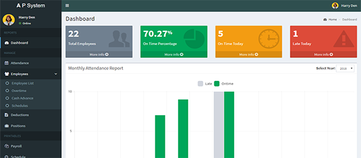

Project
Discover the innovative solutions and successful projects we've delivered across various industries. From concept to completion, each project reflects our dedication to excellence, creativity, and technological advancement.
Inventory system
A cloud-based inventory management platform that helps businesses track stock levels, monitor product movement, and generate real-time reports. The system includes automated alerts for low inventory, barcode scanning integration, and analytics dashboards to improve operational efficiency.
AI-Powered Customer Support Chatbot
An intelligent chatbot designed to provide 24/7 customer support through websites and mobile applications. The solution uses natural language processing to answer customer inquiries, automate routine tasks, and escalate complex issues to human agents when necessary.
Employee Attendance & Payroll System

A comprehensive workforce management platform that automates attendance tracking, leave management, and payroll processing. The system supports biometric integration, employee self-service portals, and detailed reporting for HR departments.